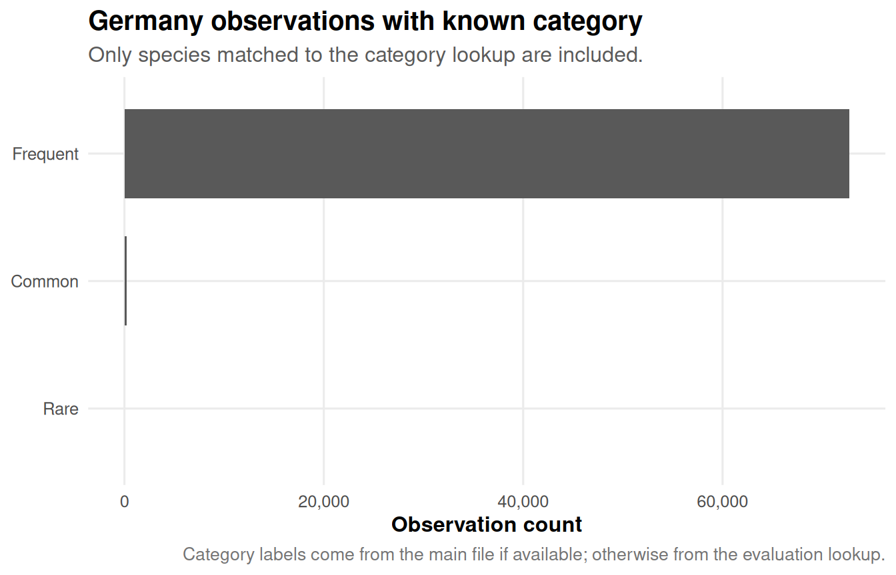
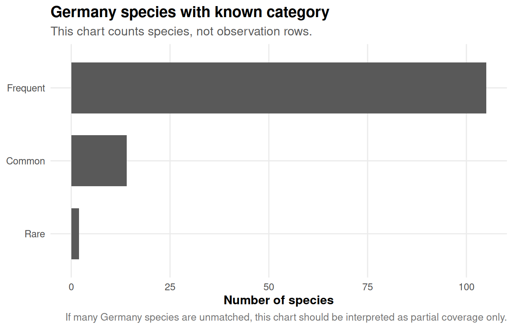

| file_role | file_path |
|---|---|
| Main observations file | GlobalGeoTree.csv |
| Category lookup file | GlobalGeoTree-10kEval-900.csv |
| Optional species catalog | Tree_species_catalog.csv |
Germany Check: Full Dataset, Species Counts, and Category Lookup
1 Purpose
This short diagnostic report checks Germany in the GlobalGeoTree observations file.
It answers three questions:
- How many observations are available for Germany?
- How many recorded species are available for Germany?
- How many Germany observations and species can be assigned to the dataset-defined categories
Rare,Common, andFrequent?
The category check is especially important because the full observations dataset may not contain a Category column. In that case, this report uses the larger evaluation dataset GlobalGeoTree-10kEval-900.csv as a category lookup table.
2 Setup
3 Input files
4 Load data and inspect the head
The table below shows the first rows of the main observations dataset. This is useful for checking which variables are available before any filtering or joins.
| sample_id | country_code | level0 | level1_family | level2_genus | level3_species | location | source | species_key | year | longitude | latitude |
|---|---|---|---|---|---|---|---|---|---|---|---|
| 1 | MW | Evergreen Broadleaf | Acanthaceae | Anisotes | Anisotes formosissimus | Malawi | iNaturalist Research-grade Observations | 5576177 | 2024 | 34.770179 | -16.244345 |
| 2 | MZ | Evergreen Broadleaf | Acanthaceae | Anisotes | Anisotes formosissimus | Mozambique | iNaturalist Research-grade Observations | 5576177 | 2018 | 34.342119 | -18.961792 |
| 3 | MZ | Evergreen Broadleaf | Acanthaceae | Anisotes | Anisotes sessiliflorus | Mozambique | iNaturalist Research-grade Observations | 7264409 | 2022 | 34.339832 | -18.600213 |
| 4 | MZ | Evergreen Broadleaf | Acanthaceae | Anisotes | Anisotes sessiliflorus | Mozambique | iNaturalist Research-grade Observations | 7264409 | 2015 | 34.340500 | -18.599860 |
| 5 | TZ | Evergreen Broadleaf | Acanthaceae | Avicennia | Avicennia marina | Tanzania, United Republic of | iNaturalist Research-grade Observations | 2925403 | 2023 | 39.490521 | -6.148904 |
| 6 | KE | Evergreen Broadleaf | Acanthaceae | Avicennia | Avicennia spec | Kenya | naturgucker | 2925398 | 2023 | 39.945604 | -3.285171 |
| 7 | NG | Evergreen Broadleaf | Acanthaceae | Avicennia | Avicennia spec | Nigeria | Biodiversity of Some Coastal Communities in Akwa-Ibom State, Nigeria | 2925398 | 2021 | 8.031336 | 4.556238 |
| 8 | NG | Evergreen Broadleaf | Acanthaceae | Avicennia | Avicennia spec | Nigeria | Biodiversity of Some Coastal Communities in Akwa-Ibom State, Nigeria | 2925398 | 2021 | 8.038207 | 4.557545 |
| 9 | NG | Evergreen Broadleaf | Acanthaceae | Avicennia | Avicennia spec | Nigeria | Flora of Coastal Environment in Cross-River State, Nigeria | 2925398 | 2019 | 8.519425 | 4.779849 |
| 10 | NG | Evergreen Broadleaf | Acanthaceae | Avicennia | Avicennia spec | Nigeria | Flora of Coastal Environment in Cross-River State, Nigeria | 2925398 | 2019 | 8.450121 | 4.787425 |
The table below shows the first rows after filtering to Germany.
| sample_id | country_code | level0 | level1_family | level2_genus | level3_species | location | source | species_key | year | longitude | latitude |
|---|---|---|---|---|---|---|---|---|---|---|---|
| 607427 | DE | Evergreen Broadleaf | Malvaceae | Abutilon | Abutilon theophrasti | Germany | Observation.org, Nature data from around the World | 3152614 | 2022 | 14.25516 | 51.87012 |
| 607428 | DE | Evergreen Broadleaf | Malvaceae | Abutilon | Abutilon theophrasti | Germany | Pl@ntNet observations | 3152614 | 2022 | 13.87257 | 51.27231 |
| 607429 | DE | Deciduous Broadleaf | Sapindaceae | Aesculus | Aesculus spec | Germany | naturgucker | 3189801 | 2023 | 13.95652 | 51.87367 |
| 607430 | DE | Deciduous Broadleaf | Sapindaceae | Aesculus | Aesculus spec | Germany | naturgucker | 3189801 | 2022 | 14.04159 | 50.97557 |
| 607431 | DE | Deciduous Broadleaf | Sapindaceae | Aesculus | Aesculus spec | Germany | Observation.org, Nature data from around the World | 3189801 | 2024 | 14.20415 | 51.97633 |
| 607432 | DE | Deciduous Broadleaf | Sapindaceae | Aesculus | Aesculus spec | Germany | Observation.org, Nature data from around the World | 3189801 | 2021 | 13.44270 | 50.93014 |
| 607433 | DE | Deciduous Broadleaf | Sapindaceae | Aesculus | Aesculus spec | Germany | Pl@ntNet automatically identified occurrences | 3189801 | 2022 | 13.82200 | 51.16400 |
| 607434 | DE | Deciduous Broadleaf | Sapindaceae | Aesculus | Aesculus spec | Germany | Pl@ntNet automatically identified occurrences | 3189801 | 2022 | 14.68800 | 51.08700 |
| 607435 | DE | Deciduous Broadleaf | Sapindaceae | Aesculus | Aesculus spec | Germany | Pl@ntNet automatically identified occurrences | 3189801 | 2022 | 14.66000 | 51.06800 |
| 607436 | DE | Deciduous Broadleaf | Sapindaceae | Aesculus | Aesculus spec | Germany | Pl@ntNet automatically identified occurrences | 3189801 | 2022 | 14.07000 | 52.24700 |
5 Germany observation and species counts
| metric | value |
|---|---|
| Germany observations | 205,747 |
| Germany recorded species names | 464 |
| Germany recorded species keys | 464 |
The Germany subset contains 205,747 observations and 464 recorded species names.
6 Category source and lookup logic
The category variable is handled in this order:
- If the main observations file already contains
category, use it directly. - If the main observations file does not contain
category, use the evaluation dataset as a lookup table. - Prefer joining by
species_keybecause it is more stable than species names. - If
species_keyis not available, fall back to joining bylevel3_species.
The species catalog is not used to assign Rare, Common, or Frequent, because the catalog does not normally contain category labels. It is a taxonomy reference, not a category lookup.
| metric | value |
|---|---|
| Lookup file used | GlobalGeoTree-10kEval-900.csv |
| Lookup rows | 901 |
| Lookup species keys with category | 900 |
| Lookup species names with category | 900 |
| Species keys with conflicting category rows | 1 |
The main observations file does not contain category. Categories were joined from GlobalGeoTree-10kEval-900.csv using species_key first and species name as fallback.
7 Category coverage in Germany
| metric | value | share |
|---|---|---|
| Germany observations | 205,747 | 100.0% |
| Germany recorded species | 464 | 100.0% |
| Germany observations with known category | 72,911 | 35.4% |
| Germany recorded species with known category | 121 | 26.1% |
| Germany observations without known category | 132,836 | 64.6% |
| Germany recorded species without known category | 343 | 73.9% |
Interpretation:
Germany observations with known categorycounts observation rows whose species could be matched toRare,Common, orFrequent.Germany recorded species with known categorycounts unique species names in Germany whose category is known.- If the full dataset does not contain
category, these values depend on how much overlap exists between Germany species and the eval lookup file.
8 Rare, Common, and Frequent relation
| category | observations | share_observations |
|---|---|---|
| Frequent | 72,698 | 99.7% |
| Common | 199 | 0.3% |
| Rare | 14 | 0.0% |
| category | species | share_species |
|---|---|---|
| Frequent | 105 | 86.8% |
| Common | 14 | 11.6% |
| Rare | 2 | 1.7% |


9 Which Germany species received a category?
| level3_species | species_key | category | observations |
|---|---|---|---|
| Salvia officinalis | 2927004 | Common | 105 |
| Corylus colurna | 2875968 | Common | 43 |
| Larix kaempferi | 2686157 | Common | 23 |
| Betula humilis | 5331629 | Common | 10 |
| Populus canescens | 3040185 | Common | 7 |
| Amelanchier arborea | 3024052 | Common | 2 |
| Hedlundia mougeotii | 9312105 | Common | 2 |
| Carya alba | 3054302 | Common | 1 |
| Carya illinoiensis | 3054287 | Common | 1 |
| Cornus kousa | 3082274 | Common | 1 |
| Cytisus villosus | 5354639 | Common | 1 |
| Euonymus japonicus | 7102937 | Common | 1 |
| Juniperus horizontalis | 2684410 | Common | 1 |
| Sigesbeckia jorullensis | 3125893 | Common | 1 |
| Dryocopus martius | 2477872 | Frequent | 11,353 |
| Vaccinium myrtillus | 2882833 | Frequent | 10,424 |
| Prunus padus | 3021037 | Frequent | 7,988 |
| Prunus spinosa | 3023221 | Frequent | 6,487 |
| Schefflera macrophylla | 8800 | Frequent | 3,818 |
| Carpinus betulus | 2875818 | Frequent | 2,991 |
| Sambucus nigra | 2888728 | Frequent | 2,534 |
| Vaccinium vitis-idaea | 2882835 | Frequent | 2,492 |
| Veronica officinalis | 3172049 | Frequent | 2,483 |
| Fraxinus excelsior | 3172358 | Frequent | 1,670 |
| Berberis vulgaris | 3033894 | Frequent | 1,184 |
| Erica excelsa | 2882780 | Frequent | 1,179 |
| Pinus sylvestris | 5285637 | Frequent | 1,131 |
| Robinia pseudoacacia | 5352251 | Frequent | 1,094 |
| Hypericum perforatum | 3189486 | Frequent | 972 |
| Salvia glutinosa | 2927026 | Frequent | 948 |
| Rhamnus cathartica | 3039491 | Frequent | 892 |
| Populus alba | 3040233 | Frequent | 868 |
| Mahonia aquifolium | 3033865 | Frequent | 835 |
| Taxus baccata | 5284517 | Frequent | 789 |
| Veronica persica | 3172077 | Frequent | 771 |
| Larix decidua | 2686212 | Frequent | 637 |
| Syringa vulgaris | 5415039 | Frequent | 587 |
| Chenopodium album | 3083838 | Frequent | 567 |
| Prunus cerasifera | 3021730 | Frequent | 558 |
| Malva moschata | 3152379 | Frequent | 509 |
| Juglans regia | 3054368 | Frequent | 493 |
| Phytolacca americana | 3084015 | Frequent | 489 |
| Ulmus glabra | 5361866 | Frequent | 462 |
| Ribes uva-crispa | 2986185 | Frequent | 411 |
| Taxodium distichum | 2684191 | Frequent | 403 |
| Rhus typhina | 3190538 | Frequent | 383 |
| Myrica gale | 5414202 | Frequent | 340 |
| Docynia delavayi | 3001068 | Frequent | 331 |
| Veronica sublobata | 3725447 | Frequent | 306 |
| Sonchus arvensis | 3105813 | Frequent | 286 |
| Veronica filiformis | 3172100 | Frequent | 269 |
| Amelanchier ovalis | 3023878 | Frequent | 268 |
| Alnus incana | 9148577 | Frequent | 211 |
| Ailanthus altissima | 3190653 | Frequent | 207 |
| Betula pubescens | 9118014 | Frequent | 159 |
| Ulmus minor | 5361865 | Frequent | 140 |
| Ulmus laevis | 7303616 | Frequent | 137 |
| Cormus domestica | 3013215 | Frequent | 130 |
| Ribes nigrum | 2986192 | Frequent | 112 |
| Ptelea trifoliata | 3190411 | Frequent | 102 |
| Paulownia tomentosa | 3170823 | Frequent | 95 |
| Pinus mugo | 5285385 | Frequent | 94 |
| Salix cinerea | 5372605 | Frequent | 86 |
| Veronica scutellata | 3172072 | Frequent | 80 |
| Salix viminalis | 5372933 | Frequent | 77 |
| Veronica longifolia | 3172118 | Frequent | 66 |
| Cotinus coggygria | 3190522 | Frequent | 61 |
| Salix repens | 9148812 | Frequent | 58 |
| Pinus nigra | 5284809 | Frequent | 55 |
| Alnus alnobetula | 8956987 | Frequent | 52 |
| Rhododendron ferrugineum | 2883073 | Frequent | 52 |
| Thuja plicata | 2684171 | Frequent | 50 |
| Veronica anagallis-aquatica | 3172086 | Frequent | 48 |
| Salix triandra | 7103891 | Frequent | 33 |
| Cornus sericea | 3082244 | Frequent | 29 |
| Abutilon theophrasti | 3152614 | Frequent | 27 |
| Prunus persica | 8149923 | Frequent | 27 |
| Tsuga heterophylla | 2687210 | Frequent | 23 |
| Erigeron sumatrensis | 3146683 | Frequent | 22 |
| Vaccinium macrocarpon | 2882841 | Frequent | 22 |
| Ficus carica | 5361909 | Frequent | 21 |
| Prunus virginiana | 3022668 | Frequent | 20 |
| Tsuga canadensis | 2687182 | Frequent | 20 |
| Salix myrsinifolia | 5372875 | Frequent | 19 |
| Ilex macrophylla | 10792217 | Frequent | 17 |
| Rhamnus alpina | 2407 | Frequent | 15 |
| Caragana arborescens | 2943190 | Frequent | 13 |
| Picea sitchensis | 5284827 | Frequent | 11 |
| Arctostaphylos spec | 2882486 | Frequent | 8 |
| Ipomoea purpurea | 2928576 | Frequent | 8 |
| Symphoricarpos orbiculatus | 2888636 | Frequent | 8 |
| Thuja occidentalis | 2684178 | Frequent | 8 |
| Betula nana | 5332004 | Frequent | 6 |
| Cryptomeria japonica | 5284237 | Frequent | 5 |
| Morus alba | 5361889 | Frequent | 5 |
| Ricinus communis | 5380041 | Frequent | 5 |
| Clethra alnifolia | 2888323 | Frequent | 4 |
| Erigeron strigosus | 3146632 | Frequent | 4 |
| Liquidambar styraciflua | 3152824 | Frequent | 4 |
| Spiraea tomentosa | 3026819 | Frequent | 4 |
| Viburnum tinus | 2888585 | Frequent | 4 |
| Cotoneaster acutifolius | 3025770 | Frequent | 3 |
| Elaeagnus umbellata | 3039267 | Frequent | 3 |
| Populus trichocarpa | 6362904 | Frequent | 3 |
| Alnus rubra | 2876176 | Frequent | 2 |
| Broussonetia papyrifera | 5361944 | Frequent | 2 |
| Cornus canadensis | 3082270 | Frequent | 2 |
| Cornus suecica | 3082246 | Frequent | 2 |
| Euonymus alatus | 3169120 | Frequent | 2 |
| Pereskia bleo | 2519 | Frequent | 2 |
| Punica granatum | 5420901 | Frequent | 2 |
| Yucca filamentosa | 2775561 | Frequent | 2 |
| Acer platanoides | 3189846 | Frequent | 1 |
| Asimina spec | 3158021 | Frequent | 1 |
| Cinnamomum cassia | 6688 | Frequent | 1 |
| Fraxinus angustifolia | 7325877 | Frequent | 1 |
| Hamamelis virginiana | 3152827 | Frequent | 1 |
| Mahonia repens | 3033850 | Frequent | 1 |
| Oxalis montana | 2891760 | Frequent | 1 |
| Aria danubialis | 9573476 | Rare | 12 |
| Cotoneaster ambiguus | 3025858 | Rare | 2 |
10 Which Germany species are still unmatched?
| level3_species | species_key | observations |
|---|---|---|
| Fagus sylvatica | 2882316 | 20,441 |
| Cupania sylvatica | 6657 | 10,609 |
| Sorbus aucuparia | 3012167 | 7,799 |
| Croton laccifer | 4691 | 7,022 |
| Ilex aquifolium | 5414222 | 5,998 |
| Sambucus racemosa | 2888723 | 5,972 |
| Corylus avellana | 2875979 | 5,079 |
| Euonymus europaeus | 3169131 | 4,815 |
| Viburnum lantana | 2888615 | 3,989 |
| Quercus oblongata | 2877951 | 3,854 |
| Viburnum opulus | 2888605 | 3,728 |
| Sambucus ebulus | 2888722 | 3,234 |
| Populus tremula | 3040249 | 2,796 |
| Cornus sanguinea | 3082234 | 2,636 |
| Cytisus scoparius | 5354656 | 2,588 |
| Alnus glutinosa | 2876213 | 2,299 |
| Prunus serotina | 3021850 | 1,964 |
| Salvia pratensis | 2927007 | 1,776 |
| Castanea sativa | 5333294 | 1,760 |
| Erigeron annuus | 3117449 | 1,750 |
| Cornus mas | 3082263 | 1,734 |
| Ligustrum vulgare | 3172300 | 1,529 |
| Aesculus spec | 3189801 | 1,442 |
| Veronica beccabunga | 3172062 | 1,398 |
| Picea abies | 5284884 | 1,222 |
| Prunus avium | 3020791 | 1,053 |
| Frangula alnus | 3039454 | 921 |
| Viburnum rhytidophyllum | 2888625 | 843 |
| Dombeya acerifolia | 6685 | 780 |
| Crataegus monogyna | 9220780 | 761 |
11 Conclusion
This diagnostic report separates two questions that are easy to confuse:
How many observations and species exist for Germany in the main dataset?
This is calculated directly from the full observations file after filteringcountry_code == 'DE'.How many Germany observations and species have a known
Rare,Common, orFrequentcategory?
This depends on whether the main file containscategory. If it does not, category can only be assigned to species that overlap with the eval lookup dataset.
Therefore, if the category comes from GlobalGeoTree-10kEval-900.csv, the Rare/Common/Frequent analysis is a matched-subset analysis, not a complete classification of all Germany species.